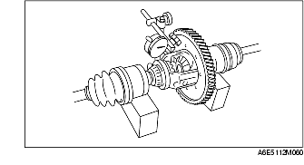

FÖRKONTROLL AV DIFFERENTIAL
B3E051501029M05
Kontroll av kuggspel
1. Mät kronhjulets kuggspel.

• Om specifikationerna inte är uppfyllda, byt ut delarna vid behov.
Standard
0,050-0,150 mm {0,0020-0,059 tum}